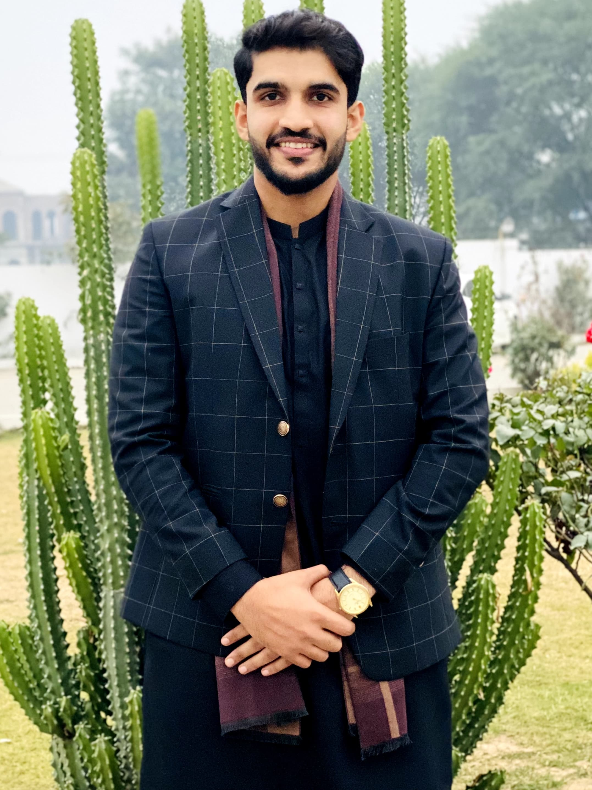

Hello, I'm
Najman Mureed
Frontend Developer


Hello, I'm
Frontend Developer
Get To Know More


1+ years
Frontend Development

BS in Computer Science
Hello, I'm Najman Mureed, a passionate fourth-year Computer Science student with over a year of experience in frontend web development. I specialize in creating responsive, user-friendly web interfaces using the latest technologies. My academic journey and hands-on projects have equipped me with a strong foundation in HTML, CSS, JavaScript, and various frontend frameworks. I thrive on turning creative ideas into functional, visually appealing websites and am excited to bring my skills to new and challenging projects.
Explore My
Dr. Israr Ahmed, a Pakistani Islamic scholar and orator, was a hugely influential figure in our life. Renowned for his Islamic lectures, he developed a devoted following throughout South Asia and beyond. His teachings resonated not just in Pakistan but with Muslim communities around the world.
Dr. Israr Ahmed (late) Launch vigorous movement for the revival of Islam. He was founder of Markazi Anjuman Khuddam-ul-Quran Lahore, Tanzeem-e-Islami Pakistan and Tahreek-e-Khalifat Pakistan. He also started a social movement of marital simplicity. He wrote above than 70 books on different aspects of Islam and religion, and some of them were translated into English and other languages. Dr. Israr Ahmed presented Quranic Teaching in Scientific and enlightened (different) way. He was awarded Sitara-e-Imtiaz in 1981. He criticized modern democracy and prevalent electoral system and argued that the head of an Islamic state could reject the majority decisions. He wanted implementation of Islamic system in Social, Cultural, Juristic, Political and economic field.

My Favourite City

The Walled City of Lahore holds a special place in my heart. It's a captivating labyrinth of history, brimming with character around every corner. Within its ancient walls, Mughal grandeur collides with the vibrant pulse of modern life.
Whether I'm getting lost in the maze of bustling bazaars or marveling at the architectural wonders like the Lahore Fort, the city offers a unique experience. It's a place where the aroma of freshly baked bread mingles with the echoes of centuries past, creating an atmosphere unlike any other.
The Walled City isn't just a historical monument; it's a living, breathing testament to Lahore's enduring spirit. It's a place I find myself constantly drawn back to, eager to explore its hidden gems and soak up its captivating energy.
Lahore offers a unique blend of history, culture, and modern life, making it a captivating destination for travelers. Whether you're fascinated by Mughal architecture, eager to savor Pakistani cuisine, or simply want to experience the vibrant energy of a bustling metropolis, Lahore has something for everyone.


Favorite Tourist spots
Ah, Dhofar during the Khareef season! That's a truly special place. Imagine a stark desert landscape transformed into a lush paradise. During Khareef, the Dhofar region comes alive with a blanket of vibrant green hills, misty mornings, and waterfalls cascading down the mountains.
The cool monsoon winds, a stark contrast to the usual desert heat, are a welcome relief. The city of Salalah becomes a hub of activity, with vibrant souqs offering local crafts and the aroma of freshly brewed Omani coffee wafting through the air.
Nature lovers can trek through the verdant mountains, explore hidden wadis (valleys), or simply relax on the pristine beaches with the sound of crashing waves. Dhofar during Khareef offers a unique escape, a chance to experience a breathtaking natural phenomenon and immerse yourself in the rich culture of the region. It's a place that stays with you long after the season ends.
Discover my Favorite Spot by clicking.


Get in Touch